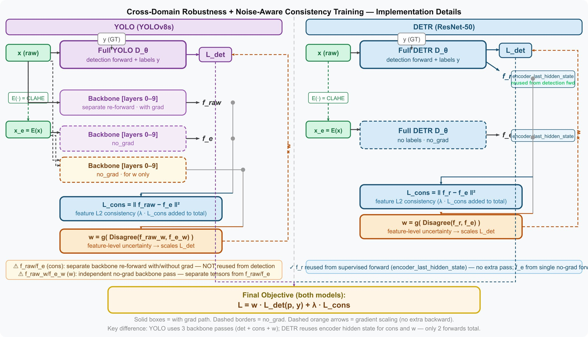
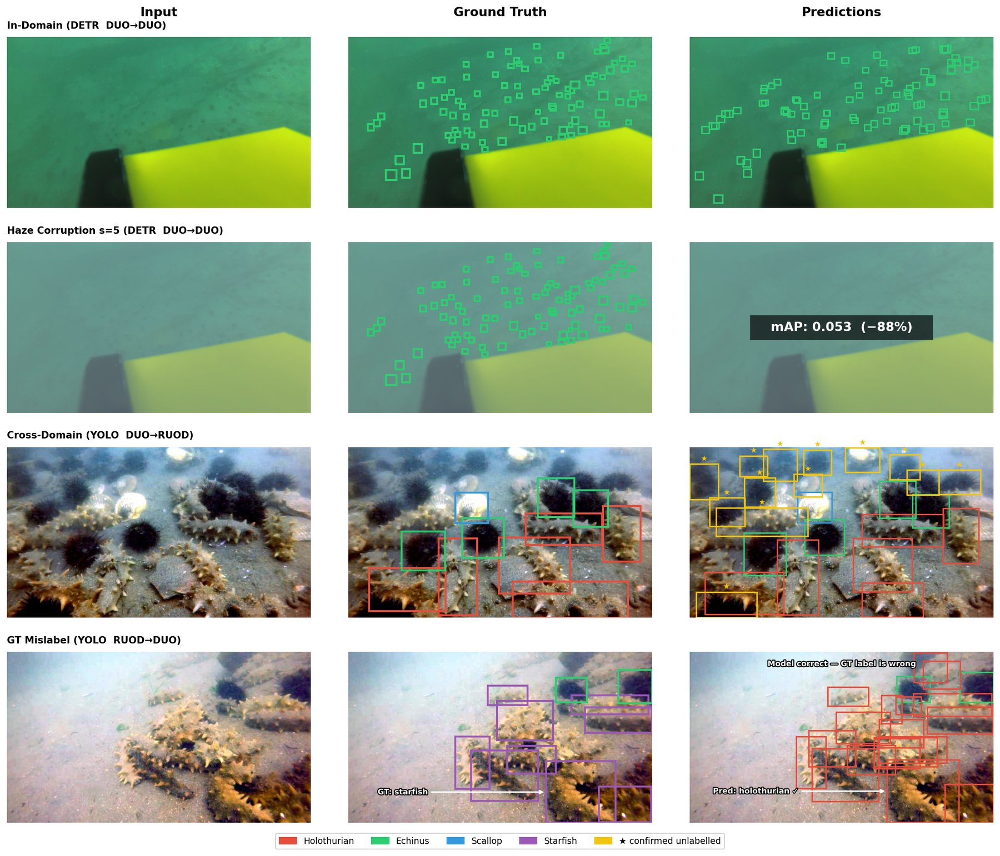
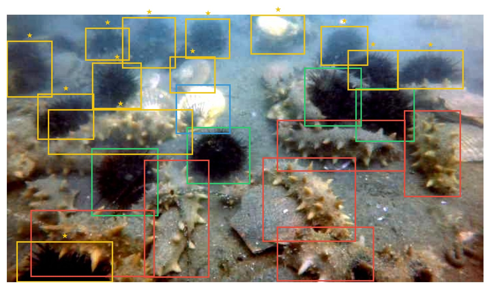

Abstract
Underwater object detection is limited by two compounding problems: strong domain shift across datasets caused by variable water conditions (attenuation, haze, turbidity, and blur), and label noise arising from missed annotations in low-visibility images. We systematically compare a CNN detector (YOLOv8) and a Transformer detector (DETR) under cross-dataset transfer, physically motivated underwater corruptions, and noisy supervision, and propose a training strategy that improves cross-domain robustness without re-annotation. Our method combines (i) a raw↔enhanced feature-consistency loss using a cheap CLAHE-based underwater enhancer as an auxiliary view, and (ii) a noise-aware supervision reweighting that down-weights samples whose raw and enhanced features strongly disagree. Experiments on DUO and RUOD show three main findings. First, YOLO achieves higher absolute performance than DETR in-domain and cross-domain, but relative robustness is direction-dependent: DETR retains more in-domain mAP under DUO→RUOD shift (66.2% vs. 56.4%), whereas YOLO retains more under RUOD→DUO (40.3% vs. 29.9%). Second, haze and turbidity are the most destructive corruptions, while blur is the least harmful. Third, the proposed method is beneficial but detector- and direction-dependent: for DETR, the full method improves DUO→RUOD cross-domain mAP from 0.285 to 0.294 and AP50 from 0.608 to 0.614, whereas for YOLO the best variant is weight only on DUO→RUOD and full on RUOD→DUO.
See what the detectors see
Pick a corruption and drag the severity. The image is corrupted live in your browser with the paper’s formulas; the numbers are the measured DUO test-set mAP@[.5:.95].
mAP vs. corruption severity (DUO test set)
Severity 0 is the clean test set. Click a panel to load it in the explorer above.
Method: dual-view training without re-annotation
Each image is seen twice: raw and through a cheap CLAHE enhancer. The enhancer isn’t treated as ground truth, only as a different view. Feature disagreement between the two views drives both a consistency loss and a per-batch trust weight on the labels.
CLAHE enhancer
Convert to LAB, apply CLAHE (clip 2.0, 8×8 tiles) to luminance only, convert back. Deterministic, no trainable parameters.
Feature-invariance loss
MSE between raw and enhanced features: YOLO backbone (layers 0–9) or DETR encoder last hidden state. Uses no labels.
Disagreement reweighting
Normalize per-image disagreement within the batch, map to a weight (α = 2), and scale the detection loss by the batch mean.

Which detector family transfers better?
Cross-domain mAP retention
Cross-domain mAP ÷ matched in-domain mAP, evaluated on the 4 shared classes.
| Train → Test | Model | AP50 | mAP | Retention |
|---|---|---|---|---|
| In-domain | ||||
| DUO → DUO | DETR | 0.694 | 0.426 | – |
| YOLOv8 | 0.797 | 0.640 | – | |
| RUOD → RUOD | DETR | 0.655 | 0.351 | – |
| YOLOv8 | 0.862 | 0.575 | – | |
| Cross-domain (4 shared classes) | ||||
| DUO → RUOD | DETR | 0.608 | 0.282 | 66.2% |
| YOLOv8 | 0.629 | 0.361 | 56.4% | |
| RUOD → DUO | DETR | 0.245 | 0.105 | 29.9% |
| YOLOv8 | 0.367 | 0.232 | 40.3% | |
RUOD is pHash-deduplicated against DUO (Hamming ≤ 4 over 18,648 images) before any cross-domain evaluation to avoid train–test leakage.
Why is DUO → RUOD easier than RUOD → DUO?
Annotation density: DUO averages 9.5 boxes/image vs. RUOD’s 4.7, so DUO forces finer discrimination. Label space: RUOD-trained models spread confidence over 10 classes, diluting the 4 shared ones. Visual nesting: DUO’s narrow green palette sits inside RUOD’s broader distribution, so DUO features cover more of RUOD than the reverse.
How do detectors degrade under underwater corruptions?
| Corruption | What it simulates | YOLOv8 s=5 | Drop | DETR s=5 | Drop |
|---|---|---|---|---|---|
| Attenuation | red-first light absorption | 0.451 | 29.5% | 0.272 | 36.2% |
| Haze | backscatter veil | 0.113 | 82.3% | 0.053 | 87.6% |
| Turbidity | suspended-particle noise | 0.032 | 95.0% | 0.108 | 74.6% |
| Blur | optical softening | 0.523 | 18.3% | 0.352 | 17.4% |
Clean mAP: YOLOv8 0.640, DETR 0.426. Drop is the relative reduction from clean to severity 5.
Does dual-view training help without re-annotation?
| DETR · 30 ep | Lcons | w | AP50 | mAP |
|---|---|---|---|---|
| DUO → RUOD | ||||
| Baseline | – | – | 0.608 | 0.285 |
| Cons. only | ✓ | – | 0.608 | 0.285 |
| Weight only | – | ✓ | 0.572 | 0.278 |
| Full | ✓ | ✓ | 0.614 | 0.294+0.009 |
| RUOD → DUO | ||||
| Baseline | – | – | 0.245 | 0.105 |
| Cons. only | ✓ | – | 0.239 | 0.086 |
| Weight only | – | ✓ | 0.242 | 0.098 |
| Full | ✓ | ✓ | 0.236 | 0.084 |
| YOLOv8 · 50 ep | Lcons | w | AP50 | mAP |
|---|---|---|---|---|
| DUO → RUOD | ||||
| Baseline | – | – | 0.629 | 0.361 |
| Cons. only | ✓ | – | 0.628 | 0.363 |
| Weight only | – | ✓ | 0.647 | 0.372+0.011 |
| Full | ✓ | ✓ | 0.608 | 0.352 |
| RUOD → DUO | ||||
| Baseline | – | – | 0.367 | 0.232 |
| Cons. only | ✓ | – | 0.360 | 0.230 |
| Weight only | – | ✓ | 0.358 | 0.229 |
| Full | ✓ | ✓ | 0.374 | 0.238+0.006 |
Cross-domain evaluation on the 4 shared classes. Bold marks the best variant per block; deltas are mAP over baseline.
Why the combination matters
Consistency alone barely moves DETR: raw and enhanced features start nearly identical, so the loss gives almost no gradient. Weighting alone has no meaningful uncertainty signal, and at DETR’s batch size of 2 the within-batch normalization collapses w toward 1. Only together does the model get a disagreement signal and use it to trust noisy labels less.
The benchmark is part of the problem
Cross-domain models often find real objects the human annotators missed, and COCO evaluation counts every one of them as a false positive.



| Class | Full GT | Miss % | Subset GT | Miss % |
|---|---|---|---|---|
| Holothurian | 15,480 | 0.43 | 268 | 25.0 |
| Echinus | 63,584 | 0.70 | 1,009 | 44.1 |
| Scallop | 14,704 | 1.63 | 540 | 44.3 |
| Starfish | 19,400 | 0.53 | 339 | 30.1 |
Missing-label rates are low overall (0.4–1.6%) but jump to 25–44% in the audited subset. The noise is concentrated in specific images, and it is a cross-domain problem: the same correction moves in-domain mAP by < 0.001.
Limitations & future work
- DETR was trained for only 30 epochs at batch size 2; longer training and batch size ≥ 8 should make the noise-aware weighting meaningful for DETR.
- Next steps: stronger transformers such as RT-DETR, physics-informed enhancement models, and domain-specific augmentation to reduce CNN texture bias.
- Evaluation covers 4 shared classes. Re-annotating the RUOD test set with enhanced images as reference would give a cleaner upper bound on true cross-domain performance.
Code
bubulean/CV703-Underwater-Research-Project
Trained weights for every DETR and YOLO variant, pHash dedup pipeline for DUO/RUOD, the corruption suite, and eight notebooks covering dataset stats, baselines, cross-domain evaluation, corruption curves, both ablation studies, result visualizations, and the label-noise audit.
Citation
@techreport{almulla2026underwater,
title = {Cross-Domain Robustness of CNN vs Transformer Detectors
for Underwater Object Detection},
author = {Almulla, Buthaina and Alshehhi, Abdulla and Yaqoob, Shamma},
institution = {Mohamed bin Zayed University of Artificial Intelligence},
address = {Abu Dhabi, United Arab Emirates},
year = {2026}
}